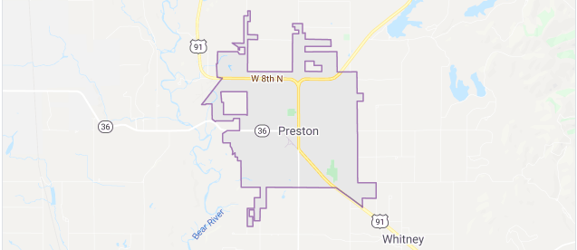

Weather Summary
Current Temperature:
Wind Speed:
Wind Chill:

PREPARING FOR YOUR ADVENTURE

| Day 1 | Day 2 | Day 3 | Day 4 | Day 5 |
|---|---|---|---|---|
Explore the best rated trails in Preston, ID. Whether you're looking for an easy walking trail or a bike trail like the Golden Spike National Historic Site and more ... Read More

CALL: 208-555-5555
EMAIL: thehikingguide@gmail.com
GIVE FEEDBACK
